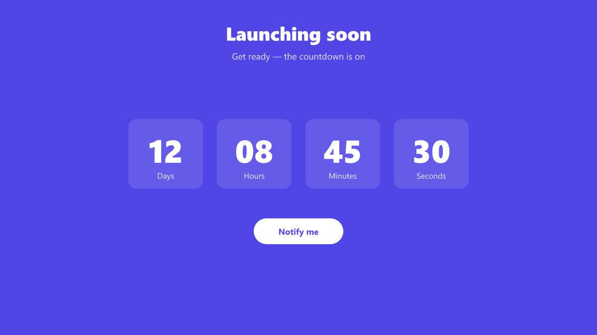

How to import
- Install and activate Free Widgets For Elementor (and Elementor) on your site.
- Go to Free Widgets → Demo Library in wp-admin.
- Find Countdown Banner and click Import — the section is added to Templates → Saved Templates and its images to your Media Library.
- Edit any page with Elementor and insert the saved template wherever you like.
Widgets used
Details
| Requires | Free Widgets For Elementor 2.0.3+ |
|---|---|
| Version | 1.0.0 |
| Category | Countdown |
| Type | Elementor saved template (section) |